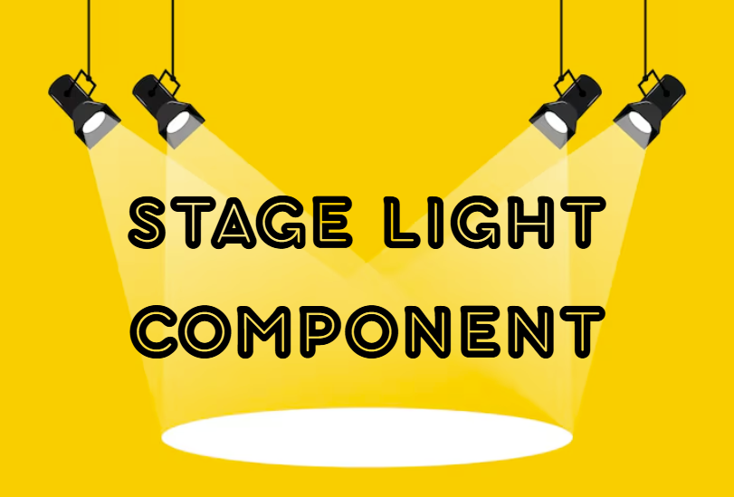
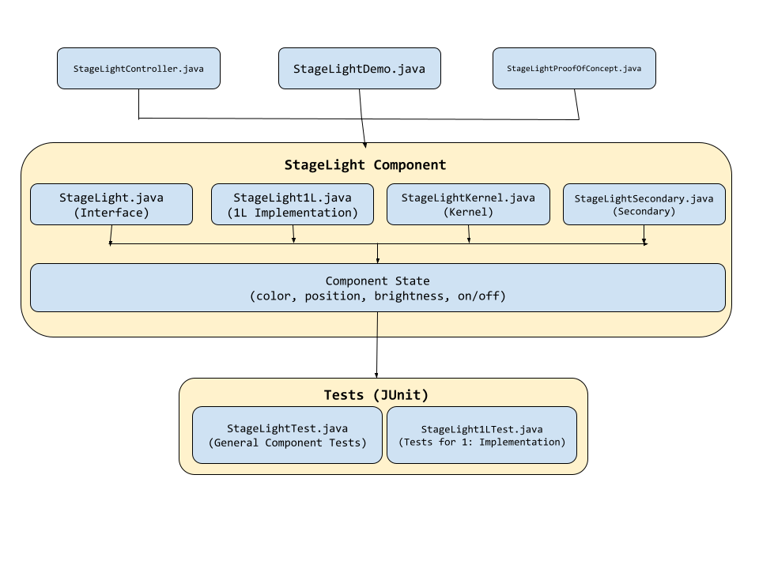
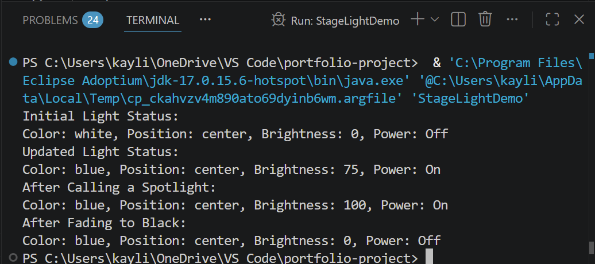
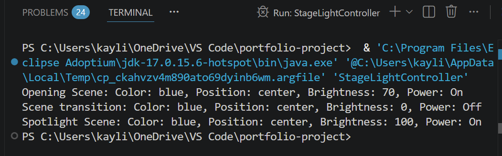

CSE 2221 Portfolio Project
Stage Light Component

Overview
The StageLight Component is a custom Java software component that models and controls stage lighting behavior. Built using the OSU Software Components methodology, the project emphasizes object-oriented design, reusable software architecture, and thorough testing while simulating real-world stage lighting operations.
How it works
The component represents stage lighting functionality through a collection of Java classes and methods that manage lighting states and behaviors. The project separates core functionality from secondary methods, including JUnit tests to verify the light's properties. The component models how a stage light transitions between different scenes during a performance by testing changes in the power state, position, brightness, and color. Lights can be turned on or off, repositioned across the stage, adjusted to any brightness level from 0–100, and customized with different colors to create a variety of stage environments. The JUnit tests validate complex lighting behaviors such as fading to black by gradually decrementing brightness until the light reaches zero, as well as activating a spotlight effect that transitions the light to full brightness, white color, and center-stage positioning. These tests ensure that each lighting transition produces the expected state changes and that the component can support changing stage conditions.

What I learned
This project strengthened my understanding of object-oriented programming, software component design, and test-driven development. I gained experience designing abstractions, writing reusable code, creating formal documentation, and using JUnit to validate software behavior through systematic testing.


Test outputs